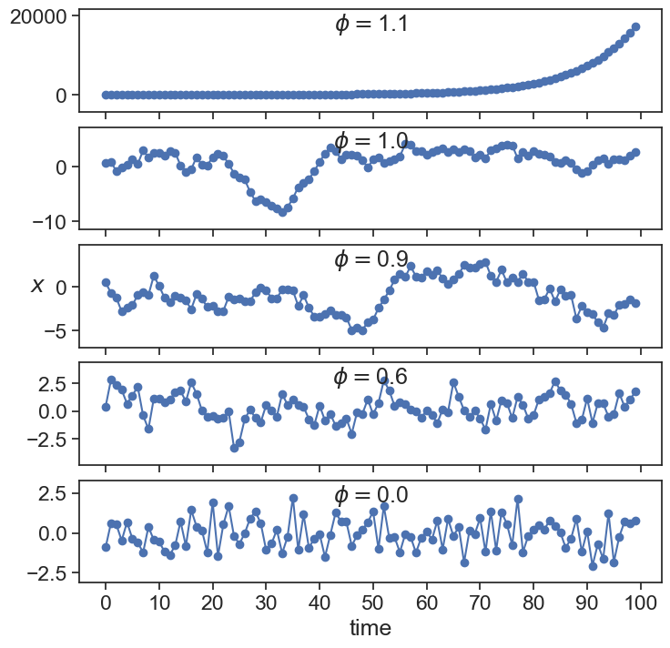
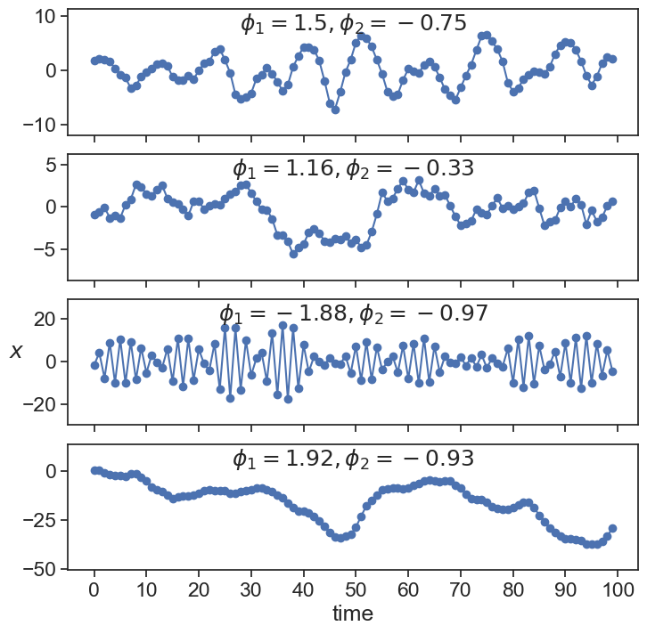

24 autoregressive processes
This lecture is partially based on Shumway and Stoffer (2017).
Consider the process
x_{t} = \phi\,x_{t-1}

These solutions look suspiciously similar to those obtained with the simplest 1st-order-homogenous differential equation:
\frac{dx}{dt} = \varphi\, x whose solution is
x(t) = x_0 e^{\varphi\, t}
Using separation of variables:
\frac{dx}{x} = \varphi\, dt
We now integrate
\int \frac{1}{x}\, dy = \int \varphi\, dt
…yielding
\ln(x) = \varphi\, t + C
where C is an integration constant. Exponentiating both sides:
x(t) = e^{\varphi\, t}\cdot e^C = C e^{\varphi\, t}
If we call the initial condition x(0)=x_0, we find that C=x_0, and we finally arrive at the solution.
For the exponential solution, it is clear that x(t) grows to infinity if \varphi>0, and it goes to zero if \varphi<0. This connection is not casual, they are the discrete and continuous versions of the same process. Starting from the continuous process \frac{dx}{dt} = \varphi\, x and using an approximation of the derivative as \frac{dx}{dt} \simeq \frac{x(t+\Delta t) - x(t)}{\Delta t} we have that \frac{x(t+\Delta t) - x(t)}{\Delta t} = \varphi\, x(t). Solving for x(t+\Delta t) yields
x(t+\Delta t) = (1 + \Delta t\,\varphi)x(t).
Calling \phi=1 + \Delta t\,\varphi and modifying the notation a little bit gives
X_{t+1} = \phi\,X_{t}.
24.1 AR(1)
Let’s add some white noise (\varepsilon) to this process.
X_{t} = \phi\,X_{t-1} + \varepsilon.
This is called an Autoregressive Process of order 1, or AR(1). Here, the current value x_{t} is dependent on the immediately preceding value x_{t-1}.

What can we call these special cases?
The time series clearly explodes to infinity if \phi>1, and seems to stay bounded for values equal or smaller than 1. We will come back to this observation in a little while, when we discuss stationarity.
24.2 AR(2)
We can define a process that the current state is dependent on the two previous states, each with a different weight.
X_{t} = \phi_1\,X_{t-1} + \phi_2\,X_{t-2} + \varepsilon

24.3 AR(p)
The next thing to do is to generalize, and define an autoregressive process that depends on p previous states:
x_{t} = \phi_1\,x_{t-1} + \phi_2\,x_{t-2} + \cdots + \phi_p\,x_{t-p} + \varepsilon